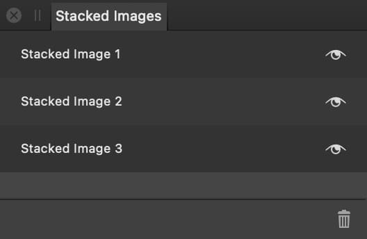

The Astrophotography Stack Persona's key controls are located in the right studio, where you can specify the files to be stacked and how they are processed.
On the Tools panel, the Persona provides the Bad Pixel Map Tool, which helps to identify and correct defective pixels that originate in a camera setup.
Studio panels
Files—specify the light frames and calibration frames to be processed.
Stacking Options—choose and control the stacking method used to process the frames.
RAW Options—choose how the frames are interpreted.
Stacked Images—all images created during a single session in the Persona are added here.
Requirements
At minimum, a set of light frames must be added to the Files panel. It is recommended that you add calibration frames as well.
Each set of light frames and calibration frames constitutes a file group. Multiple file groups can be added to the panel for processing into a single end result.
Each file group should contain frames taken at different times, i.e. across several nights, during which shooting conditions may have changed.
About the Stacked Images panel
Use the Stacked Images panel to compare results from using different files and options.

To rename a stacked image, double-click it on the panel.
Each stacked image becomes a pixel layer (of the same name) in the resulting Affinity Photo 2 document.
Astrophotography stack editing tools:
Hand Tool— move around the document by dragging on it.
Zoom Tool— zoom in and out of the document.
Crop Tool—crop the document to remove unwanted areas.
Bad Pixel Map Tool—automatically or manually identify defective pixels in specific kinds of calibration frame.
To open the Astrophotography Stack Persona:
Select File>New Astrophotography Stack.
To add files:
On the Files panel, set Type to Light frames, then select Add Files.
Browse to your light frames, select them, then select Open.
(Optional but recommended) For each set of calibration frames that you have shot:
Set Type as appropriate.
Select Add Files.
Browse to the corresponding frames, select them, then select Open.
(Optional) For each collection of light and calibration frames taken at a different time, select Add a file group and repeat steps 1 through to 3 as appropriate.
When the stacking process is complete, its end result is added to the Stacked Images panel.
The frames you added remain in the Files panel, enabling you to add additional frames or file groups and adjust settings to create additional stacked images, i.e. to try for improved results.
To finish stacking and save your document:
On the context toolbar, select Apply. The workspace switches to the Photo Persona.
Select File>Save.
Browse to where you want to save your document.
Name your document and select Save.
Upon leaving the Astrophotography Stack Persona, each image in the Stacked Images panel is added as a new pixel layer near the bottom of the document's layer stack.
Curves and Levels adjustments, with settings calculated during the stacking process, are added at the top of the layer stack. Perform any post-processing you wish, including editing these adjustments.
 Hand Tool— move around the document by dragging on it.
Hand Tool— move around the document by dragging on it. Zoom Tool— zoom in and out of the document.
Zoom Tool— zoom in and out of the document. Crop Tool—crop the document to remove unwanted areas.
Crop Tool—crop the document to remove unwanted areas. Bad Pixel Map Tool—automatically or manually identify defective pixels in specific kinds of calibration frame.
Bad Pixel Map Tool—automatically or manually identify defective pixels in specific kinds of calibration frame.